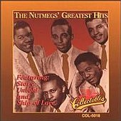
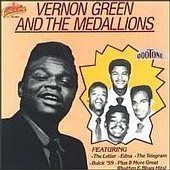

Заппа'zУх!Ой!
русский более или менее регулярный бюллетень для поклонников американского композитора
Frank'а Vincent'а Zappa'ы
Выпуск.36 (21 декабря 2001)
Любовью полон каждый звук
Хоровое пение - искусство голытьбы. Народа, который не то, чтобы гитарку из шпона некондиционного позволить себе не может, на вшивую губную гармошку и ту не знает, где копеюшек наскрести. Тоска!
Но если только водкой шары не заливать прямо с утра семь раз в неделю, то от нужды, Ч.Дарвин утверждал, бывает вырастают крылья. Родился самокатом двухколесным, а через труд и ежедневную работу над собой однажды станешь самолетом. В груди забьется пламенный мотор. Ну или как минимум глотка луженой станет, чистые звуки будет издавать, серебряные ноты.
Любопытно, что черные вокальные группы, которые в счастливых начале, середине пятидесятых попеть сходились, помяукать, почирикать во дворах и переулках Гарлема, на свалках автомобильных какого-нибудь Нью-Хевена, Коннектикут, и сами себя считали соловьями. Певчими птичка. Orioles, Wrens, Cardinals, Robins - такие название в ходу у молодежи были. Иволги, Крапивники, Малиновки и Кардиналы. Красота.
Причем без всякого преувеличения. Что может быть прекрасней афро-американского пятиголосия? Диапазона от баса до фальцета? Небесной акварели между первым и вторым тенором, свирелей и колокольчиков между лирическим и драматическим? Да, ничего. Чистое искусство без всяких там левых приспособлений, примочек электрических, изделий механических. Человек во всей его первозданной красе. Ногою топнул, рот открыл и песня полилась. КамАЗом не заглушишь.
В период до-Битловской поп-кузницы того, что будет, Doo-Wop, а именно такое название придумал вокальному варианту ритм-н-блюза нью-йоркский дискжокей Gus Gossert, любовью пользовался всеобщей. Не меньшей, чем его вокально-инструментальный родственник, которого деляга хитроумным Alan Freed нарек веселым белым словом Rock'n'Roll. Все было честно, поровну. Но победили струны, когда пробил час долгожданный делить прилавки и выручку.
Впрочем, в этом нет ничего удивительного. Время гуляло ветром между ног. Центр тяжести смещался к тазо-бедренному донцу. Хотелось быть пушкой, пистолетом, а губкам, челкам, бровкам - кобурой. А что Doo-Wop? Музыка скворцов, конечно, куда там, даже в самых отчаянных и быстрых номерах нет гона, мартовского драйва, эрекции блюзовой гитарки. У птичек все как-то по-быстрому и незаметно, поют лишь только день напролет.
Shoo loot shoo be doop, shoo loot shoo be doop
In the still shoo loot shoo be doop of the night
Shoo loot shoo be doop
I held you shoo loot shoo be doop held you tight
Cause I love, shoo loot shoo be doop love you so
Shoo loot shoo be doop
Promise I'll never shoo loot shoo be doop let you go
Shoo loot shoo be doop
In the still of the night
Shoo loot shoo be doop
Короче, оказался коммерчески несостоятелен. В попе не прохилял. Черное многолосье сохранилось только в классическом, академическом варианте - soul'а и gospel'а. Что, впрочем, не мешало нашему кумиру, Фрэнку Заппе, нежно любить это старые, забытые звуки
Nah, nah, nah
Nah, nah, nah, whoa-oh, whoa-oh
Nah, nah, nah
Nah, nah, nah, whoa-oh, whoa-oh
эпохи торжества обыкновенных голосовых связок над грубой силой электро-магнитного излучения.
| The very first tunes that I wrote were 50's doo wop, 'Memories Of El Monte', and stuff like that. It's always been my contention that the music that was happening during the 50's has been one of the finest things that ever happened to American music and I loved it. I could sit down and write a hundred more of the 1950's type songs right now, and enjoy every minute of it. | Самыми первыми моими мелодиями были doo-wop'ы в стиле пятидесятых. Типа 'Memories Of El Monte'. Вообще же, и это мое глубокое убеждение, то, что происходило у нас с музыкой в пятидесятые, это самое замечательно, что вообще случалось в американской музыке. Я и сейчас мог бы сесть и написать сотню песен в стиле тех лет, и наслаждался бы каждой минутой этого дела. |
| FZ, 1974 (In His Own Words) | FZ, 1974 (Своими Собственными Словами) |
Сотню не сотню, но помимо нестареющего Doo-Wop хита всех времен и народов, 'Memories Of El Monte' Фрэнк написал с десяток песен совмещающих подростковый уровень лирического мышления с дошкольным способом его выражения.
Это, конечно, в первую очередь двенадцать номеров специального ретро-альбома Cruising With Ruben & The Jets, в котором собраны один лишь шедевры гармонического разложения и сложения, Love Of My Life, Fountain Of Love, Jelly Roll Gum Drop и Deseri.
Мой персональный FZ Doo-Wop фаворит Go Cry On Somebody Else's Shoulder, альбом Freak Out! Чрезвычайно хороши еще Electric Aunt Jemima, и The Air альбома Uncle Meat. Это все, естественно, собственные творения мастера. Из десятка же любимых вещей других композиторов, исполненных в разное время группой Фрэнка и вошедших в официальные альбомы, отметим самые прелестные. Valerie (Jackie & the Starlites) закрывает альбом Burnt Weenie Sandwich. А неподражаемое исполнение Closer You Are (the Channels) открывает Them Or Us.
Однако это наверняка и так известно всякому нормальному поклоннику Фрэнка Винсента. Ну, кроме, может быть только того, что собственно Джаз в данном случае зовется Doo-Wop'ом.
Другое дело, откуда река течет, ноги растут и руки. Тут, думаю, хорошая рекомендация не помешает. Лишней не будет.
Тогда из десятка вокальных групп пятидесятых так или иначе повлиявших на формирование музыкального мира ФЗ я бы выбрал пару, те что в фундаменте, несущие конструкции, опоры.
Во-первых, Nutmegs.
|
Запевки из боевых хитов этих парней, Story Untold, Ship of Love, прямо
упоминаются, мелькают и не раз, в текстах песен Матерей Изобретения.
Cheap thrills set fire to my soul
Fuzzy Dice, |
 |
Но прелесть, не только и не столько в этих цитатах-цветочках, сколько в ягодке. В том, до какой степени манера Фрэнка баском Wow-Вакать за спинами своих солистов похожа на фирменные приемы Nutmeg'овского баса.
Go cry
On somebody else's shoulder
(Oo-wow-oo-wow)
I'm somewhat wiser now
And one whole year older
(Oo-wow-oo-wow)
Ну, а под цифрой два - абсолютно неподражаемый Вернон Грин и его
Медальоны. Самый проникновенный из всех исполнителей главного призыва
всего Doo-Wop'а.

Oh, my darling, please, hear my plea,
Please
В отличии от Орешков - Nutmegs, которые как и большинство тогдашних вокальных групп, были восточными, Медальоны Грина - калифорнийцы. Родные. Соответственно, пели они не только о девушках. Естественно. Сердце любого паренька самого западного штата большой страны, повидлом залитой, между Канадой и Мексикой, отдано автомобилям, ну, а девушки, девушки, только как часть внутреннего оформления салона. То есть, прекрасны, но на ходовые качества практически не виляют. Карбюратор важнее.
Так что Speedin', Buick 59, "Pushbutton Automobile," "Coupe DeVille Baby и '59 Volvo" - ударные песенки квинтета, безусловно, относились к самым праздничным и выразительным проявлением идиотизма той жизни, что окружала Фрэнки на перекрестке двух дорог в центре пустыни Мохав. Незабываемой! Не зря же мы находим столько, Нэшей, Монц и Chevy'39 в его ранних, антропологией навеянных песнях. Дым выхлопных труб Отечества.
Но важнее даже сладкой ностальгии по бараньей, наивной и невинной, давней дури, уроки сельского сюрка от Вернона. Тот интуитивный дадаизм, который у обычной Doo-Wop'овой группехи не шел дальше простого как мычанье Zoom-Boom-Zing Ooah-Woah, у пионера сознательного спунеризма Грина - речь человека будущего. Пел, пел, и вдруг на фоне вокальных переливов товарищей по сцене прозрел и шепотом заговорил.
I can whisper sweet words of pismotology in your ear
And speak to you of the pompitous of love..
Dootone #347 - "The Letter", 1954
|
"Pizmotality described words of such secrecy that they could only be spoken to the
one you loved," Green told ...
"And puppetutes? "A term I coined to mean a secret paper-doll fantasy figure [thus puppet], who would be my everything and bear my children." |
"Писмоталити подразумевает слова такой секретности, что говорить их
можно только любимому человеку, " - объясняет Грин...
"Что касается папьетусов, это специальное название воображаемой секретной куклы из папье-маше, которая будет для меня всем и родит мне детей" |
Movin' to Montana soon
Gonna be a Dental Floss tycoon (yes I am)
Movin' to Montana soon
Gonna be a mennil-toss flykune
Связь, как говорится, прямая и неразрывная. Просто у тридцатитрехлетнего Фрэнка, жизненные планы оказались посерьезнее, чем у четырнадцатилетнего Вернона. А фонетика - она, понятное дело, инструмент. Материал скульптора, художника, творца, короче, пластилин.
За него и выпьем.
Тем более, что повод есть - 21 декабря! День рождения, как ни как, Фрэнка Винсента Заппы. Очередное.
Здесь мы налили. А тут закусить! Ура!
То есть, Уау-Зум-Бам-Рааув! Оп-па-да-па.
Искренне Ваш, Владимир Советов
http://www.arf.ru/
| Домой | Заппа'zУх!Ой! | Поиск | Хозяин |